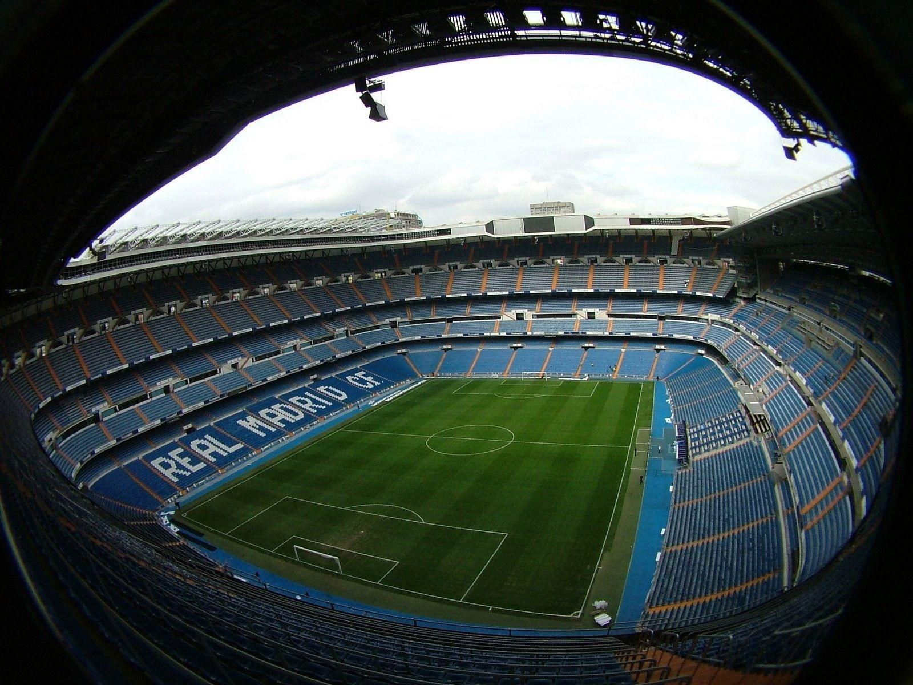
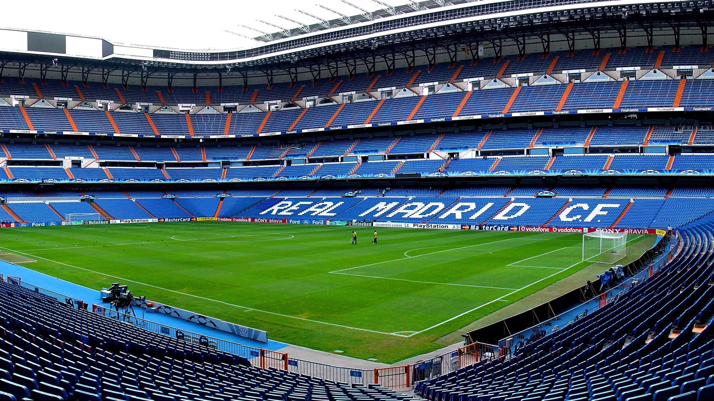
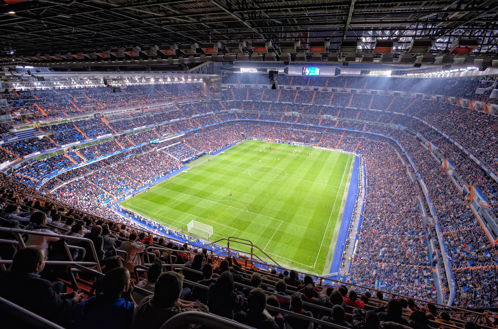

stade Santiago Bernabéu (en espagnol : Estadio Santiago Bernabéu) est un stade de football situé à Madrid, Espagne. Inauguré le 14 décembre 1947 et propriété du Real Madrid, sa capacité est depuis 2006 de 81 044 spectateurs. Il se trouve au cœur de la capitale espagnole, sur le Paseo de la Castellana dans le district de Chamartín. Il est desservi par la station de métro du même nom. Initialement connu comme le Nouveau stade Chamartín, il reçoit son nom actuel en 1955 en l'honneur du président du club de l'époque, Santiago Bernabéu1.
Résidence du Real Madrid, un des clubs de football les plus prestigieux au monde, le stade a accueilli certains des événements les plus importants du sport mondial, parmi lesquels les finales de la Coupe du monde 1982, de l'Euro 1964 et de la Coupe d'Europe des clubs champions, devenue Ligue des champions, à quatre reprises (1957, 1969, 1980 et 2010)
Matches importants accueillis :
- 30 mai 1957: Real Madrid - Fiorentina: 2-0 :Finale de la Coupe des clubs champions européens 1956-19575: 124000 personne
- 17 juin 1964: Espagne - Hongrie :2-1 a.p. :Demi-finale de l'Euro 1964 :34713 personne
- 21 juin 1964: Espagne - Union soviétique: 2-1 :Finale de l'Euro 1964: 79115 personne
- 28 mai 1969: AC Milan - Ajax Amsterdam :4-1 :Finale de la Coupe des clubs champions européens 1968-19695: 31782 personne
- 28 mai 1980 : Nottingham Forest - Hambourg SV :1-0 :Finale de la Coupe des clubs champions européens 1979-19805: 51000 personne
- 29 juin 1982: Allemagne de l’Ouest - Angleterre: 0-0: Deuxième tour de la Coupe du monde 1982 :75000 personne
- 2 juillet 1982: Allemagne de l’Ouest - Espagne :2-1 :Deuxième tour de la Coupe du monde 1982: 90089 personne
- 5 juillet 1982 : Espagne - Angleterre 0-0 Deuxième tour de la Coupe du monde 1982 75000
- 11 juillet 1982 : Italie - Allemagne de l’Ouest: 3-1 :Finale de la Coupe du monde 1982: 90000 personne
- 22 mai 2010 :Bayern Munich - Inter Milan: 0-2 :Finale de la Ligue des champions de l'UEFA 2009-20105 :73170 personne
- 9 décembre 2018 : l'Argentine River Plate - Boca Juniors: 3-1 a.p.: Finale retour de la Copa Libertadores 201818: 62282 personne

_______
